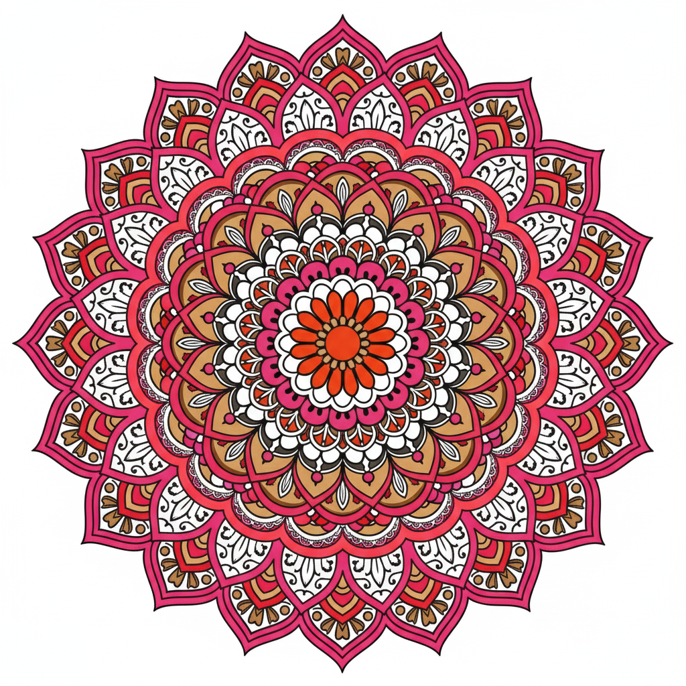
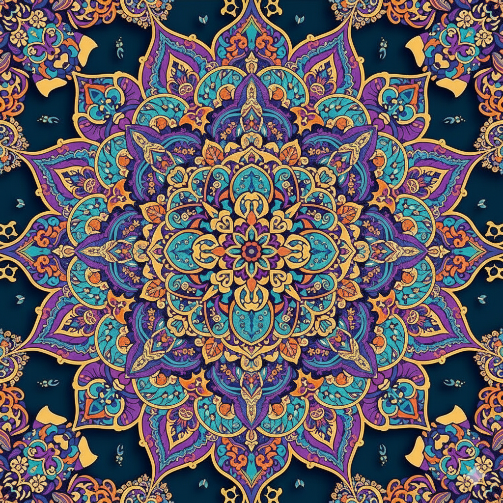
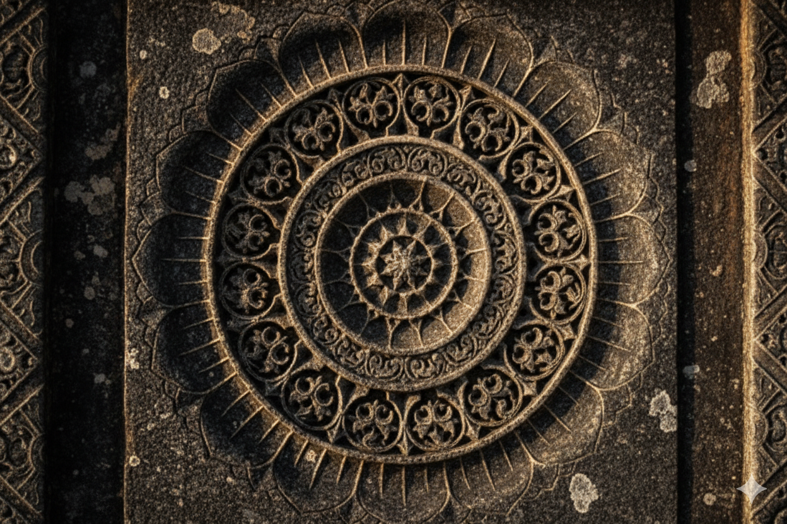
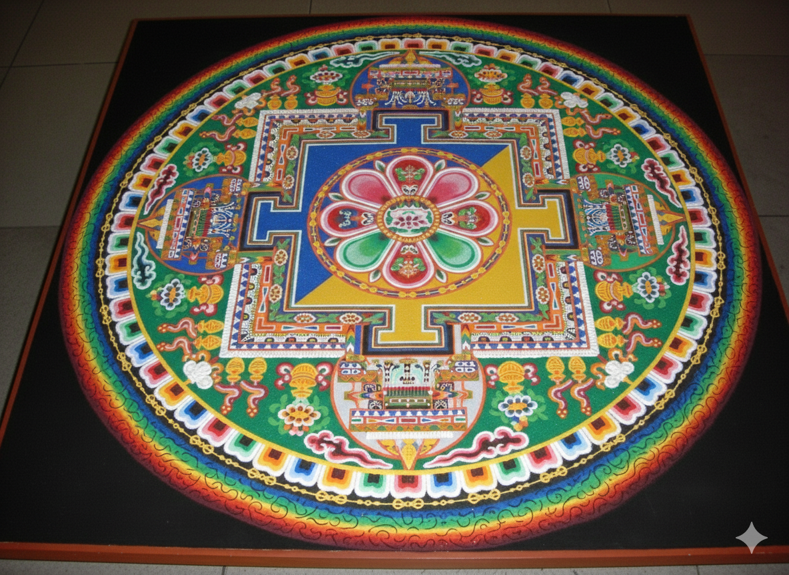
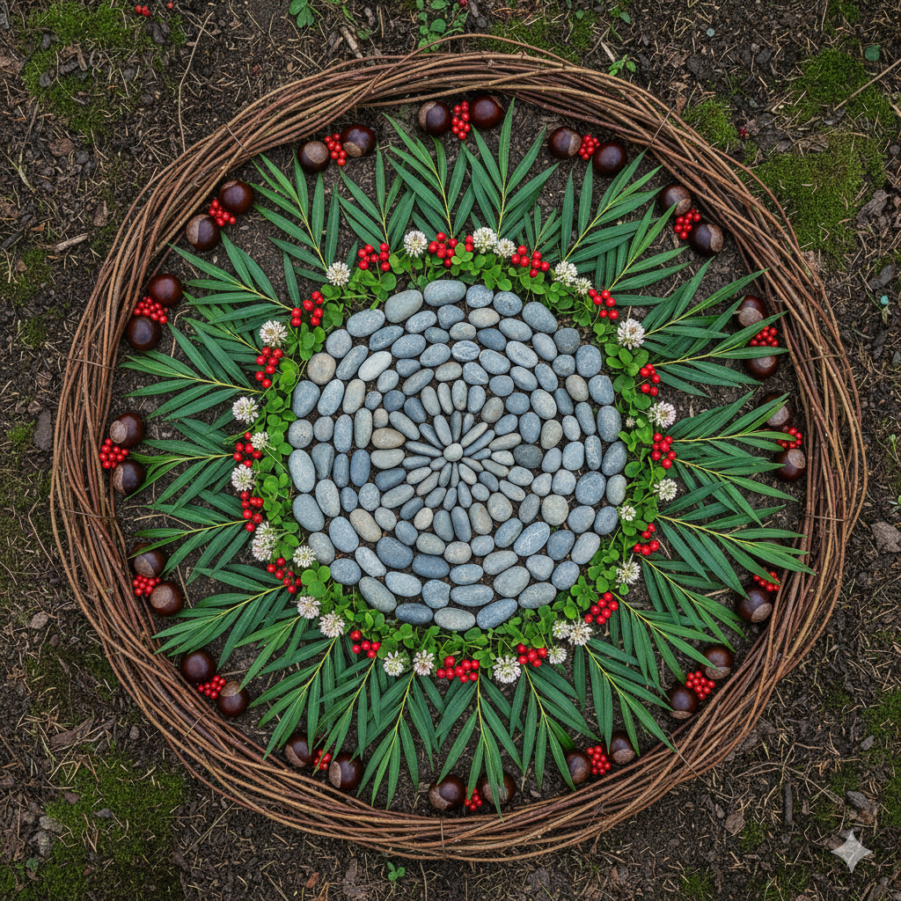
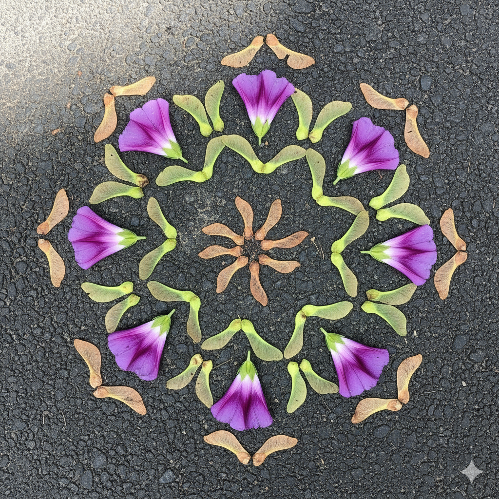
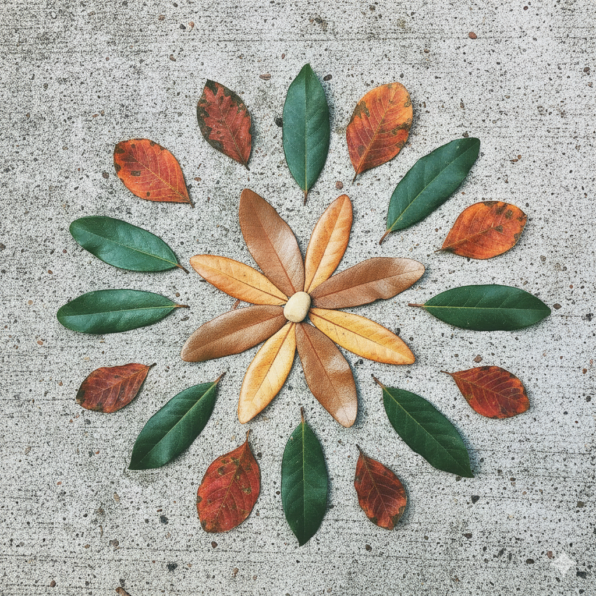
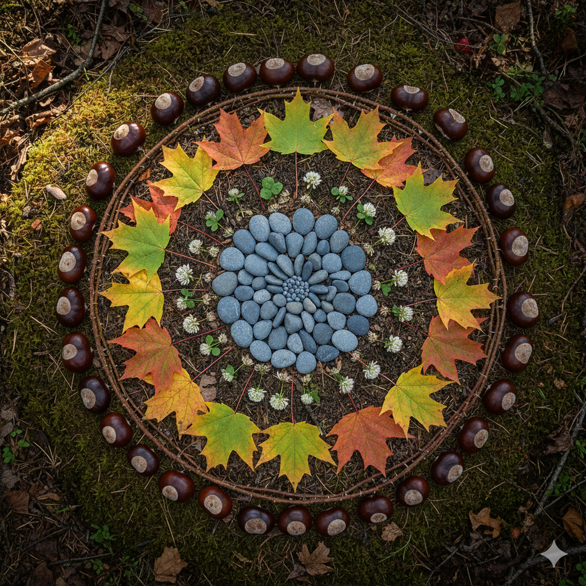
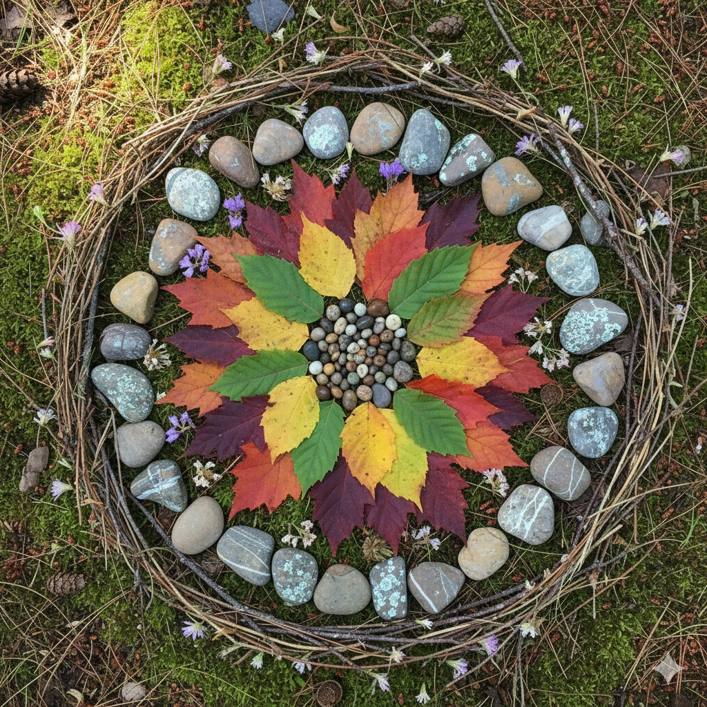
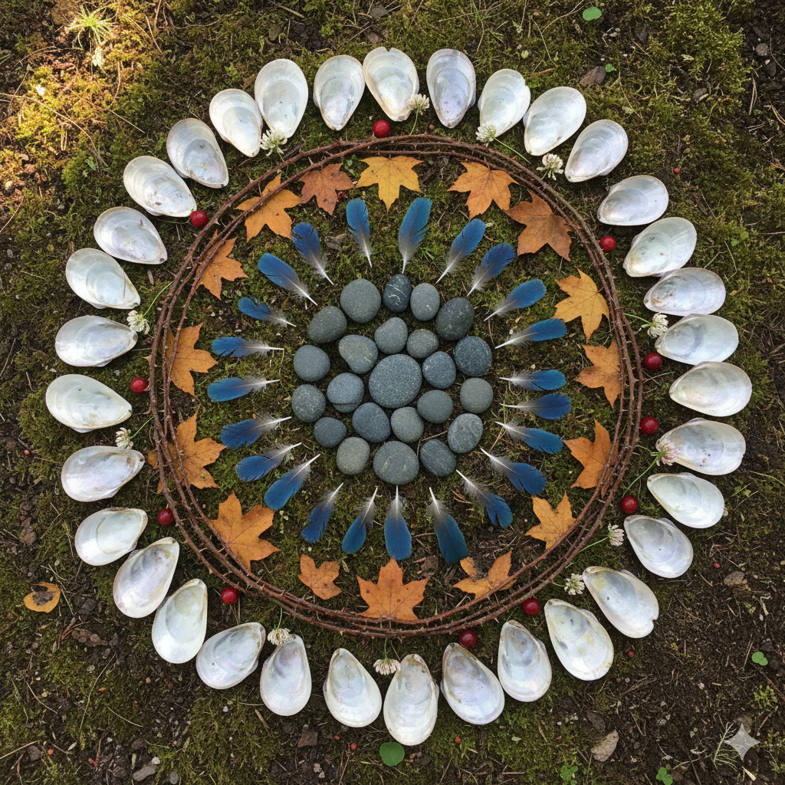

Mandala stip-schilderworkshop Petteflet
Welkom bij mandala stip-schilderen! 🎨

Wat is een mandala?
Een mandala is een kleurrijke cirkel met patronen, net als een bloem of een sneeuwvlok.
Het woord komt uit het Sanskriet en betekent “cirkel.”
Een mandala groeit vanuit het midden, net als kringen in het water.

Waar komen ze vandaan?
Mandala’s bestaan al duizenden jaren.
Ze komen uit India en Tibet, waar ze werden gemaakt om rust en vrede te brengen.
Monniken en kunstenaars maakten ze met zand, verf of steentjes.
Overal ter wereld maken mensen mandala’s, elk met hun eigen stijl en betekenis.

Verschillende soorten mandala’s
Er zijn heel veel soorten mandala’s!
Zandmandala’s
Gemaakt met gekleurd zand (zoals een zandkasteel)


Geschilderde mandala’s
Gemaakt met kwasten en verf

Steenmandala’s
Gemaakt van steentjes en kiezelstenen

Stip-mandala’s
Gemaakt met héél veel kleurrijke stipjes

Bewegende mandala’s
Natuur mandala’s






Ons avontuur van vandaag: stippen! 🌈
Vandaag maken we onze eigen mandala’s met de stip-schildertechniek! We gebruiken hulpmiddelen om kleine, kleurrijke stipjes te maken die samen een mooi patroon vormen. Je mag de stipjes zetten waar je wilt, zodat jouw mandala helemaal van jou is.
Klaar om mandala-kunstenaar te worden? 🌟

Materialen

Stift

Potlood (platte achterkant)

Potlood (scherpe punt)

Wattenstaafje

Stap 1


Stap 2


Stap 3


Stap 4

Stap 5

Stap 6